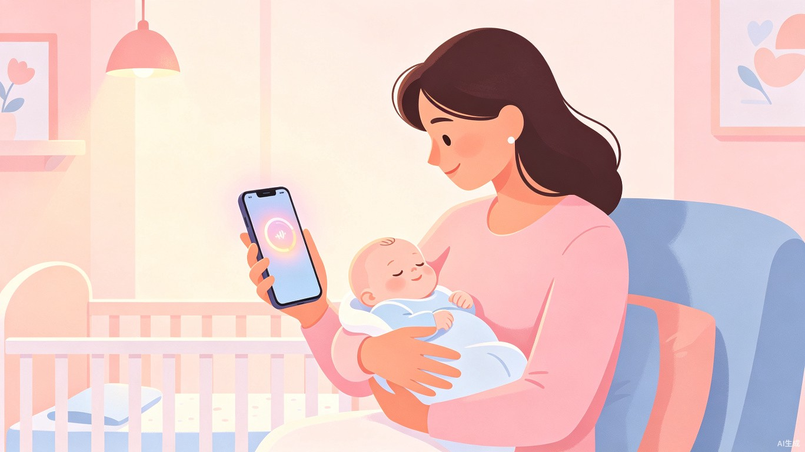

婴儿黄疸AI智能检测小程序

从临床痛点出发，以AI技术赋能家庭健康照护
新生儿黄疸是新生儿期最常见的疾病之一，发病率约60%（早产儿高达80%）。传统检测依赖经皮胆红素仪或血清学检查，家庭场景下家长缺乏专业设备，难以早期发现和持续跟踪。
很多家长"看不出"宝宝是否黄疸加重，导致延误治疗，严重时引发胆红素脑病，造成不可逆的神经损伤。这是每一个新生家庭都可能面临的隐形风险。
灵感来源于临沂市人民医院（专利申请人）的临床实践。我们希望将医院级的多模态AI监测技术，通过手机摄像头赋能给每个家庭——让家长只需用手机拍一张照片，就能初步判断宝宝黄疸风险等级，将专业的医疗检测能力延伸到千家万户。
一个基于Web技术的跨平台应用（手机+电脑端均可使用的小程序/Web应用），核心功能是拍照/上传婴儿皮肤照片，通过AI视觉分析检测黄疸程度，给出风险等级和建议。无需下载安装，打开浏览器即可使用，真正做到零门槛、零成本的家庭黄疸初筛。
聚焦新生儿家庭照护的核心场景
缺乏经验的初为父母者，需要简易可靠的居家检测工具
祖辈或保姆，需要直观易懂的黄疸判断辅助
社区卫生服务中心人员，用于产后随访黄疸初筛
专业月嫂群体，需要辅助工具提升照护服务质量
经皮胆红素仪价格昂贵，家庭难以配备；血清学检查需到医院，流程繁琐。
家长缺乏医学知识，仅凭肉眼观察无法准确判断黄疸程度，容易误判或漏判。
多数家长对新生儿黄疸的认知不足，不了解何时需要就医，错过最佳干预窗口。
新生儿出院后需定期复查胆红素水平，但频繁跑医院增加家庭负担，复查率偏低。
每日在家中为宝宝拍照检测，持续跟踪黄疸变化趋势，及早发现异常。
配合社区医护人员产后随访，提供客观的黄疸数据参考，提升随访效率。
社区卫生服务中心快速筛查工具，高效识别高风险新生儿，及时转诊。
简洁高效的技术架构，保障准确性与易用性
采用HTML/CSS/JavaScript构建，手机与电脑自适应布局。
基于肤色分析的黄疸检测算法，提取皮肤图像特征与正常肤色模型比对。
围绕核心检测能力，构建完整的用户服务闭环。
严格保障用户数据安全与婴儿隐私。
以技术创新守护每一个新生儿的健康起点
以用户检测流程为主线，构建完整功能闭环
无需下载安装，扫码或输入网址即可访问
按照引导拍摄宝宝额头、胸部等指定部位照片
AI算法自动提取肤色特征，比对标准模型，5秒出结果
显示黄疸风险等级（安全/关注/警示/危险），并给出就医建议
保存历史数据、查看趋势图、学习黄疸防治知识
调用摄像头或相册，AI自动识别分析
历史记录可视化，掌握黄疸变化走势
黄疸防治指南，科学育儿必备知识库
智能预警提醒，高风险时及时建议就医
源自临床、服务临床的医工交叉创新团队
本项目基于临沂市人民医院（专利申请人）的临床实践经验与专利成果（CN121617630A：婴儿状态智能监测预警系统）转化而来。团队将医院级的多模态AI监测技术降维应用至家庭场景，致力于让每一个新生儿都能享受到专业、便捷的健康监测服务。